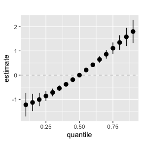
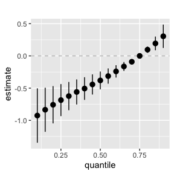
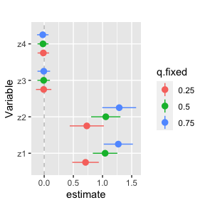
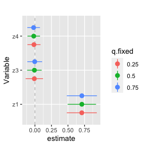
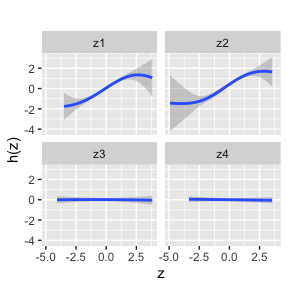
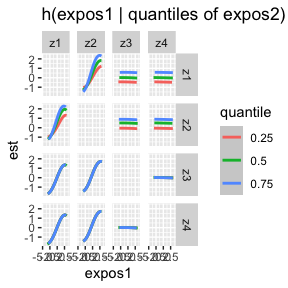

If the models were fit for 10,000 iterations this would be:
sel.MI <- seq(5001,10000, by = 5) Fit new OverallRiskSummaries function with our BKMR MI fits using approx method:
overallrisks.MI <- OverallRiskSummaries.MI(BKMRfits = BKMRfits10, qs = seq(0.1, 0.9, by = 0.05), q.fixed = 0.5, sel = sel.MI, method = "approx") Rerun the OverallRiskSummaries function but now FIXING the quantile for z2 to 0.25 (for all comparisons)
NOTE: you can fix one or more elements of the mixture, but the quantile you are fixing them to needs to be the same (q.alwaysfixed)
overallrisks.MI.fixed <- OverallRiskSummaries.MI(BKMRfits = BKMRfits10, qs = seq(0.1, 0.9, by = 0.05),
q.fixed = 0.75, q.alwaysfixed = 0.25,
index.alwaysfixed = 2, sel = sel.MI, method="approx") You can now plot this data frame as you normally would for a BKMR fit:
ggplot(overallrisks.MI, aes(quantile, est, ymin = est - 1.96 * sd, ymax = est + 1.96 * sd)) +
geom_hline(yintercept = 00, linetype = "dashed", color = "gray") +
geom_pointrange()+ ggtitle("") + scale_y_continuous(name="estimate")
Plot for the case where you fixed the quantile of 1 (or more) mixture elements.
If you are making multiple of these plots for different quantiles, you will most likely want to fix the y limits so that the plots are directly comparable.
ggplot(overallrisks.MI.fixed, aes(quantile, est, ymin = est - 1.96*sd, ymax = est + 1.96*sd)) +
geom_hline(yintercept=00, linetype="dashed", color="gray") +
geom_pointrange()+ ggtitle("")+ scale_y_continuous(name="estimate")
Fit new SingVarRiskSummaries function with our BKMR MI fits:
singvarrisk.MI <- SingVarRiskSummaries.MI(BKMRfits=BKMRfits10, qs.diff = c(0.25, 0.75),
q.fixed = c(0.25, 0.50, 0.75), sel=sel.MI, method = "approx")
#> [1] "1 out of 3 complete: 0.06 min run time"
#> [1] "2 out of 3 complete: 0.12 min run time"
#> [1] "3 out of 3 complete: 0.17 min run time"Rerun the SingVarRiskSummaries.MI function but now fixing the quantile for z2 to 0.25 (for all comparisons)
NOTE: you can fix one or more elements of the mixture, but the quantile you are fixing them to needs to be the same (q.alwaysfixed).
Also, you need to specify which.z to NOT include the fixed elements (it will still run if you dont do this, but your plot will look funny).
singvarrisk.MI.fixed <- SingVarRiskSummaries.MI(BKMRfits = BKMRfits10, which.z=c(1,3,4),
qs.diff = c(0.25, 0.75), q.fixed = c(0.25, 0.50, 0.75),
q.alwaysfixed = 0.25, index.alwaysfixed = 2,
sel=sel.MI, method = "approx")
#> [1] "1 out of 3 complete: 0.04 min run time"
#> [1] "2 out of 3 complete: 0.09 min run time"
#> [1] "3 out of 3 complete: 0.14 min run time"
## plot the single variable dataframe for the MI fits
ggplot(singvarrisk.MI, aes(variable, est, ymin = est - 1.96*sd,
ymax = est + 1.96*sd, col = q.fixed)) +
geom_hline(aes(yintercept=0), linetype="dashed", color="gray") +
geom_pointrange(position = position_dodge(width = 0.75)) +
coord_flip() + ggtitle("")+
scale_x_discrete(name="Variable")+ scale_y_continuous(name="estimate")
Plot for the case where you fixed the quantile of 1 (or more) mixture elements
NOTE: if you do not change which.z to NOT include the fixed element, then the graph will have undesired points.
ggplot(singvarrisk.MI.fixed, aes(variable, est, ymin = est - 1.96*sd,
ymax = est + 1.96*sd, col = q.fixed)) +
geom_hline(aes(yintercept=0), linetype="dashed", color="gray") +
geom_pointrange(position = position_dodge(width = 0.75)) + coord_flip() + ggtitle("")+
scale_x_discrete(name="Variable")+ scale_y_continuous(name="estimate")
Fit new PredictorResponseUnivar function for our MI fits.
This part can easily be run in parallel by only selecting one z at a time (which.z=1) and then rbinding the dataframes.
univar.MI <- PredictorResponseUnivar.MI(BKMRfits10, ngrid = 50, q.fixed = 0.5,
sel = sel.MI, method="approx")
#> [1] "1 out of 4 complete: 0.02 min run time"
#> [1] "2 out of 4 complete: 0.03 min run time"
#> [1] "3 out of 4 complete: 0.05 min run time"
#> [1] "4 out of 4 complete: 0.07 min run time"Plot univariate response functions:
ggplot(univar.MI, aes(z, est, ymin = est - 1.96*se, ymax = est + 1.96*se)) +
geom_smooth(stat = "identity") + ylab("h(z)") + facet_wrap(~ variable)+ggtitle("")
First fit the new PredictorResponseBivar function to our MI fits using the approx method:
bivar.MI <- PredictorResponseBivar.MI(BKMRfits = BKMRfits10,
min.plot.dist = 1, sel=seq(5001,10000,by=500),
method="approx") Now, apply the UNEDITED function PredictorResponseBivarLevels using the Z matrix containing ALL observations from the K MI datasets:
Z.MI <- Z.complete.MI(BKMRfits10)
bivar.levels.MI <- PredictorResponseBivarLevels(pred.resp.df = bivar.MI,
Z=Z.MI, both_pairs = TRUE,
qs = c(0.25, 0.5, 0.75))Create the plot for the bivariate curves:
ggplot(bivar.levels.MI, aes(z1, est)) + geom_smooth(aes(col = quantile), stat = "identity") +
facet_grid(variable2 ~ variable1) + ggtitle("h(expos1 | quantiles of expos2)") + xlab("expos1")
#> Warning: Removed 307 rows containing missing values (geom_smooth).